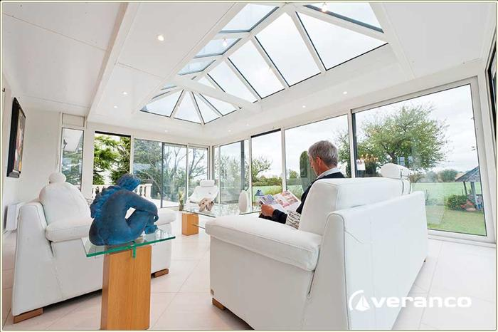
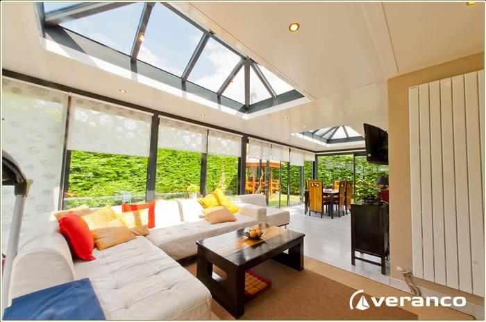
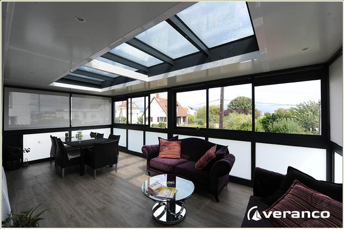
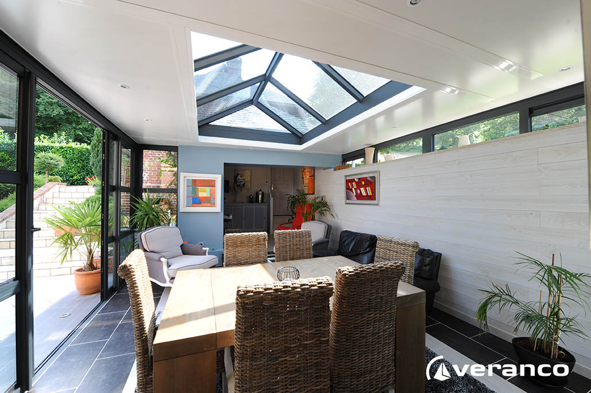
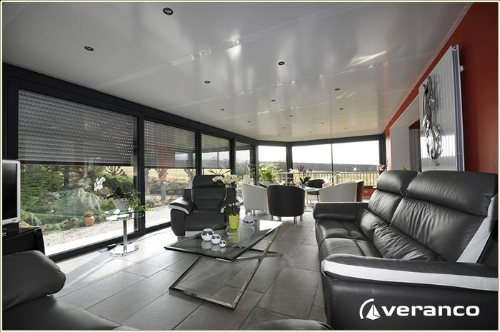

Demandez votre devis
Veuillez écrire votre demande
veranda Bornéo
La véranda Vérandôme est une véranda à toiture plate au design très moderne mais qui s’intègre aussi parfaitement bien aux maisons anciennes.
Image
Description
Son dôme vitré central en double vitrage à contrôle solaire optimise la luminosité nécessaire.
Cette véranda offre un espace de confort, lumineux et convivial qui s’ouvre sur le jardin et sur votre intérieur.Ses performances thermiques et acoustiques sont uniques sur le marché de la véranda; Des spots d'éclairage encastrés dans le plafond peuvent venir en supplément (commande à distance). Elle offre une résistance totale au vent à l'air et aux intempéries, la structure ne bouge pas. Pour fermer les coLa véranda doubles pentes permet d'allier la technique et l'élégance. Confortable et raffinée, elle est conçue pour tous ceux qui aiment recevoir et vivre dans un espace lumineux et chaleureuxntours, il est possible de mettre en place des fixes ou coulissants (de 2 à 4 vantaux) équipés de double vitrage 4-20-4 mm avec gaz argon et serrure 3 ou 5 points. Triple vitrage en option, même pour le puit de lumière en toiture.La véranda doubles pentes permet d'allier la technique et l'élégance. Confortable et raffinée, elle est conçue pour tous ceux qui aiment recevoir et vivre dans un espace lumineux et chaleureux La véranda doubles pentes permet d'allier la technique et l'élégance. Confortable et raffinée, elle est conçue pour tous ceux qui aiment recevoir et vivre dans un espace lumineux et chaleureuxLa véranda doubles pentes permet d'allier la technique et l'élégance. Confortable et raffinée, elle est conçue pour tous ceux qui aiment recevoir et vivre dans un espace lumineux et chaleureux
Veranda Double Pente
Avec cette veranda faites de vos vitre ojeoffiehfpefhepfje pifejfipefpiei
Image
Description
La véranda doubles pentes permet d'allier la technique et l'élégance. Confortable et raffinée, elle est conçue pour tous ceux qui aiment recevoir et vivre dans un espace lumineux et chaleureux.
La véranda doubles pentes permet d'allier la technique et l'élégance. Confortable et raffinée, elle est conçue pour tous ceux qui aiment recevoir et vivre dans un espace lumineux et chaleureux. La véranda doubles pentes permet d'allier la technique et l'élégance. Confortable et raffinée, elle est conçue pour tous ceux qui aiment recevoir et vivre dans un espace lumineux et chaleureux. La véranda doubles pentes permet d'allier la technique et l'élégance. Confortable et raffinée, elle est conçue pour tous ceux qui aiment recevoir et vivre dans un espace lumineux et chaleureux. La véranda doubles pentes permet d'allier la technique et l'élégance. Confortable et raffinée, elle est conçue pour tous ceux qui aiment recevoir et vivre dans un espace lumineux et chaleureux.La véranda doubles pentes permet d'allier la technique et l'élégance. Confortable et raffinée, elle est conçue pour tous ceux qui aiment recevoir et vivre dans un espace lumineux et chaleureuxLa véranda doubles pentes permet d'allier la technique et l'élégance. Confortable et raffinée, elle est conçue pour tous ceux qui aiment recevoir et vivre dans un espace lumineux et chaleureux
Veranda Fidji
La véranda doubles pentes permet d'allier la technique et l'élégance. Confortable et raffinée, elle est conçue pour tous ceux qui aiment recevoir et vivre dans un espace lumineux et chaleureux
Image
Description
La véranda doubles pentes permet d'allier la technique et l'élégance. Confortable et raffinée, elle est conçue pour tous ceux qui aiment recevoir et vivre dans un espace lumineux et chaleureuxLa véranda doubles pentes permet d'allier la technique et l'élégance. Confortable et raffinée, elle est conçue pour tous ceux qui aiment recevoir et vivre dans un espace lumineux et chaleureuxLa véranda doubles pentes permet d'allier la technique et l'élégance. Confortable et raffinée, elle est conçue pour tous ceux qui aiment recevoir et vivre dans un espace lumineux et chaleureuxLa véranda doubles pentes permet d'allier la technique et l'élégance. Confortable et raffinée, elle est conçue pour tous ceux qui aiment recevoir et vivre dans un espace lumineux et chaleureuxLa véranda doubles pentes permet d'allier la technique et l'élégance. Confortable et raffinée, elle est conçue pour tous ceux qui aiment recevoir et vivre dans un espace lumineux et chaleureuxLa véranda doubles pentes permet d'allier la technique et l'élégance. Confortable et raffinée, elle est conçue pour tous ceux qui aiment recevoir et vivre dans un espace lumineux et chaleureux.La véranda doubles pentes permet d'allier la technique et l'élégance. Confortable et raffinée, elle est conçue pour tous ceux qui aiment recevoir et vivre dans un espace lumineux et chaleureux
Veranda Thaiti
La véranda doubles pentes permet d'allier la technique et l'élégance. Confortable et raffinée, elle est conçue pour tous ceux qui aiment recevoir et vivre dans un espace lumineux et chaleureux.
Image
Description
La véranda doubles pentes permet d'allier la technique et l'élégance. Confortable et raffinée, elle est conçue pour tous ceux qui aiment recevoir et vivre dans un espace lumineux et chaleureuxLa véranda doubles pentes permet d'allier la technique et l'élégance. Confortable et raffinée, elle est conçue pour tous ceux qui aiment recevoir et vivre dans un espace lumineux et chaleureuxLa véranda doubles pentes permet d'allier la technique et l'élégance. Confortable et raffinée, elle est conçue pour tous ceux qui aiment recevoir et vivre dans un espace lumineux et chaleureuxLa véranda doubles pentes permet d'allier la technique et l'élégance. Confortable et raffinée, elle est conçue pour tous ceux qui aiment recevoir et vivre dans un espace lumineux et chaleureuxLa véranda doubles pentes permet d'allier la technique et l'élégance. Confortable et raffinée, elle est conçue pour tous ceux qui aiment recevoir et vivre dans un espace lumineux et chaleureuxLa véranda doubles pentes permet d'allier la technique et l'élégance. Confortable et raffinée, elle est conçue pour tous ceux qui aiment recevoir et vivre dans un espace lumineux et chaleureuxLa véranda doubles pentes permet d'allier la technique et l'élégance. Confortable et raffinée, elle est conçue pour tous ceux qui aiment recevoir et vivre dans un espace lumineux et chaleureuxLa véranda doubles pentes permet d'allier la technique et l'élégance. Confortable et raffinée, elle est conçue pour tous ceux qui aiment recevoir et vivre dans un espace lumineux et chaleureux
Veranda Tonga
La véranda doubles pentes permet d'allier la technique et l'élégance. Confortable et raffinée, elle est conçue pour tous ceux qui aiment recevoir et vivre dans un espace lumineux et chaleureux.
Image
Description
La véranda doubles pentes permet d'allier la technique et l'élégance. Confortable et raffinée, elle est conçue pour tous ceux qui aiment recevoir et vivre dans un espace lumineux et chaleureuxLa véranda doubles pentes permet d'allier la technique et l'élégance. Confortable et raffinée, elle est conçue pour tous ceux qui aiment recevoir et vivre dans un espace lumineux et chaleureuxLa véranda doubles pentes permet d'allier la technique et l'élégance. Confortable et raffinée, elle est conçue pour tous ceux qui aiment recevoir et vivre dans un espace lumineux et chaleureuxLa véranda doubles pentes permet d'allier la technique et l'élégance. Confortable et raffinée, elle est conçue pour tous ceux qui aiment recevoir et vivre dans un espace lumineux et chaleureuxLa véranda doubles pentes permet d'allier la technique et l'élégance. Confortable et raffinée, elle est conçue pour tous ceux qui aiment recevoir et vivre dans un espace lumineux et chaleureuxLa véranda doubles pentes permet d'allier la technique et l'élégance. Confortable et raffinée, elle est conçue pour tous ceux qui aiment recevoir et vivre dans un espace lumineux et chaleureuxLa véranda doubles pentes permet d'allier la technique et l'élégance. Confortable et raffinée, elle est conçue pour tous ceux qui aiment recevoir et vivre dans un espace lumineux et chaleureux